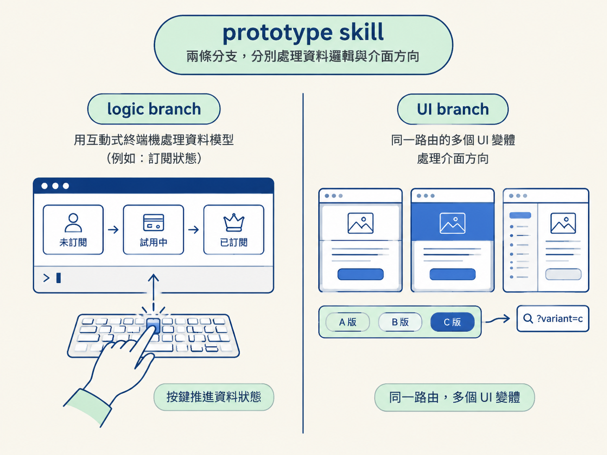

prototype skill 是 grilling 或其他規劃階段會用到的原型工具，目前提供兩條分支：logic branch 與 UI branch。前者用互動式終端機程式處理資料模型，後者用同一路由的多個 UI 變體處理介面方向。

| 分支 | 原型形式 | 處理的未知 | 操作方式 |
|---|---|---|---|
| logic branch | 極小的互動式終端機程式 | 複雜、隨時間變化的資料模型 | 用鍵盤按鍵推進資料狀態 |
| UI branch | 同一路由上的多個 UI 變體 | 介面方向 | 用 URL 搜尋參數切換，透過底部浮動列比較 |
logic branch 產出一個小型互動式終端機程式。程式中會放入資料模型，使用者再透過按鍵逐步推進，查看資料在不同時間點的狀態。
它適用於訂閱狀態到期與續訂、庫存進出、即時連線人員加入與離開等情境。這些情境的資料會隨時間在多個狀態之間轉換。
logic branch 的輸入與輸出如下：
| 項目 | 內容 |
|---|---|
| 輸入 | 複雜、隨時間變化的資料模型 |
| 操作 | 使用鍵盤按鍵將資料往前推進 |
| 輸出 | 互動式終端機程式，以及各時間點的資料狀態 |
UI branch 針對同一路由產生多個差異明顯的介面版本。變體之間的佈局、資訊順序、互動方式都可以不一樣。
版本使用 URL 搜尋參數切換，例如 /dev-prototype?variant=c。畫面下方會顯示浮動列，讓使用者切換、比較版本。
UI branch 的輸入與輸出如下：
| 項目 | 內容 |
|---|---|
| 輸入 | 同一路由與要驗證的介面區塊 |
| 切換方式 | URL 搜尋參數，例如 variant=c |
| 比較方式 | 使用畫面底部的浮動列切換版本 |
| 輸出 | 同一路由上的多個 UI 變體 |
使用時，在 prompt 中指名分支，再指定要驗證的對象：
用 prototype skill 的 logic branch，
把訂閱狀態的資料模型做成一個互動式終端機程式，
讓我可以按鍵把它往前推、看到各時間點的狀態。
用 prototype skill 的 UI branch，
針對課程頁的「線上人數」區塊做 3 個差異很大的版本，
用 URL 參數切換比較。| 項目 | 限制 |
|---|---|
| 原型用途 | 兩條分支產出的都是 throwaway 原型，預期使用後丟棄，不屬於正式功能。 |
| 版本狀態 | prototype skill 仍在演進中，分支內容可能調整，也可能增加新分支。 |
| 實際行為 | 以目前使用版本的實際行為為準。 |
| 分支組合 | logic branch 與 UI branch 可以依序使用；同時包含資料邏輯與介面方向時，可先執行 logic branch，再執行 UI branch。 |
| 要查驗的內容 | 使用分支 |
|---|---|
| 資料如何在不同狀態之間轉換 | logic branch |
| 同一個路由的介面方向 | UI branch |
| 同時包含資料邏輯與介面方向 | 先 logic branch，再 UI branch |